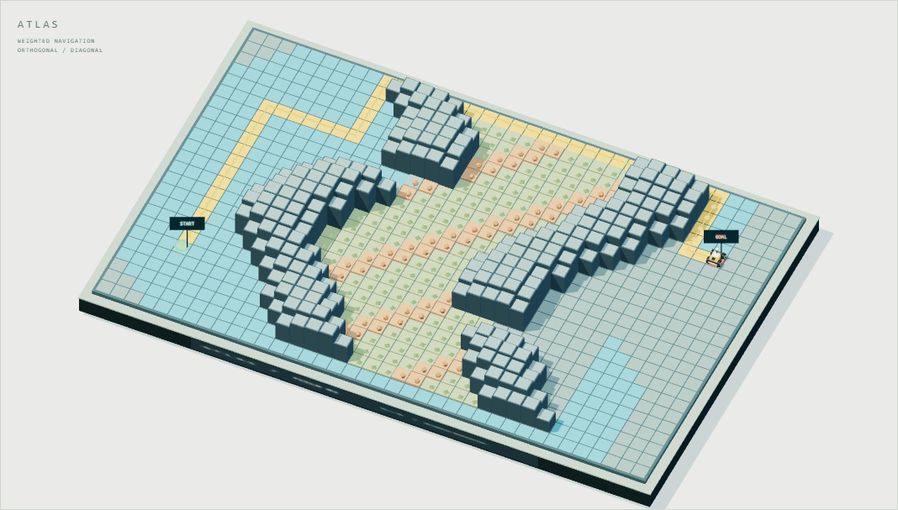
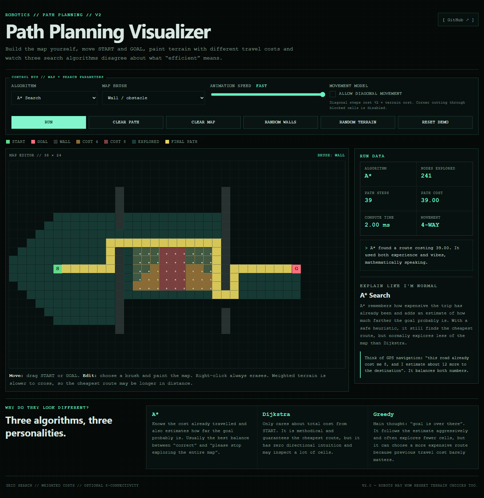
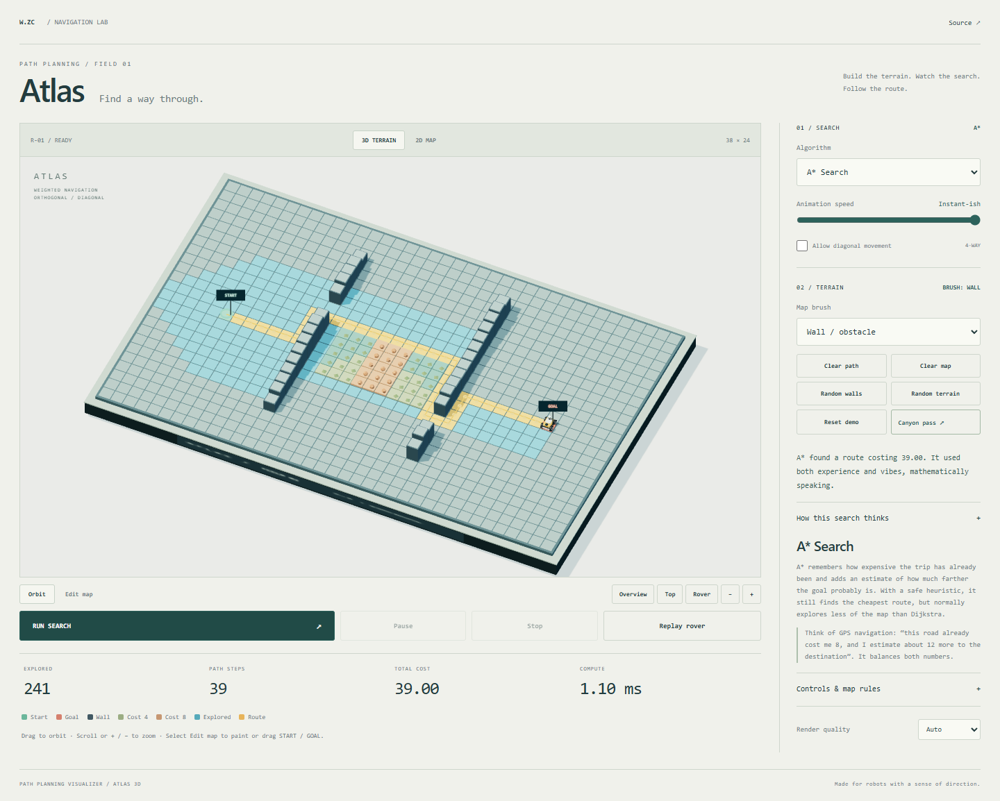
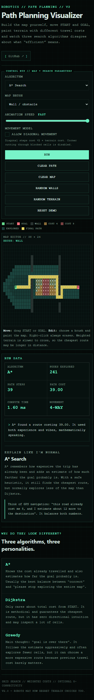
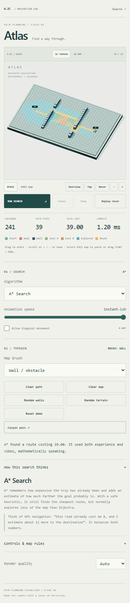
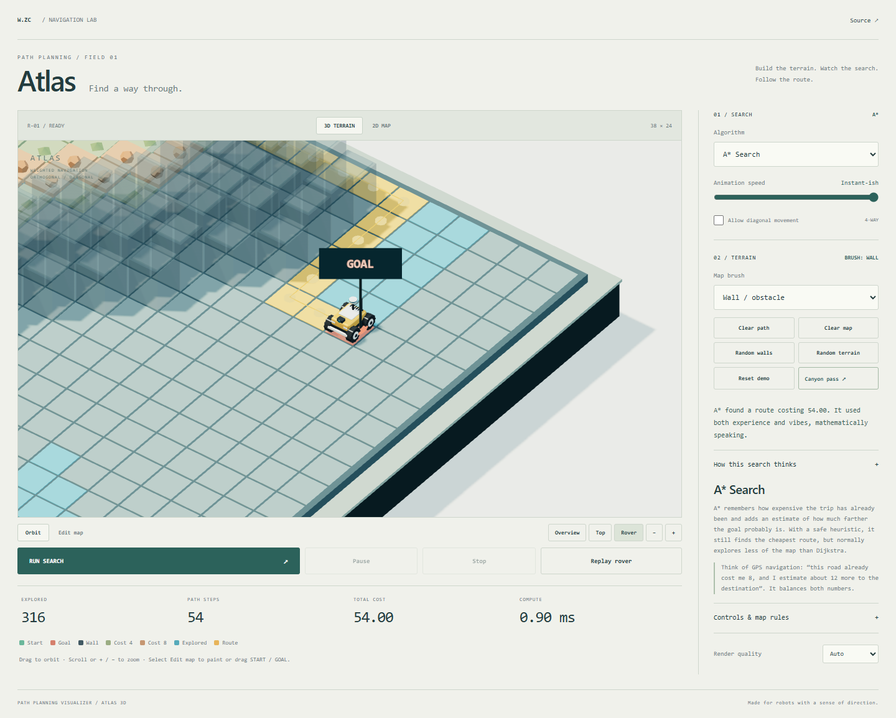

A physical-looking survey table, a Blender-built rover and the same weighted search algorithms. Paint the map, orbit the terrain and follow the route.
Twelve seconds of actual WebGL frames at 24 FPS. Exploration is condensed; rover traversal uses fixed simulation steps. This is not a real-time performance recording.






The repository includes the editable Blender scene, reproducible construction script and the exported GLB used by the browser.